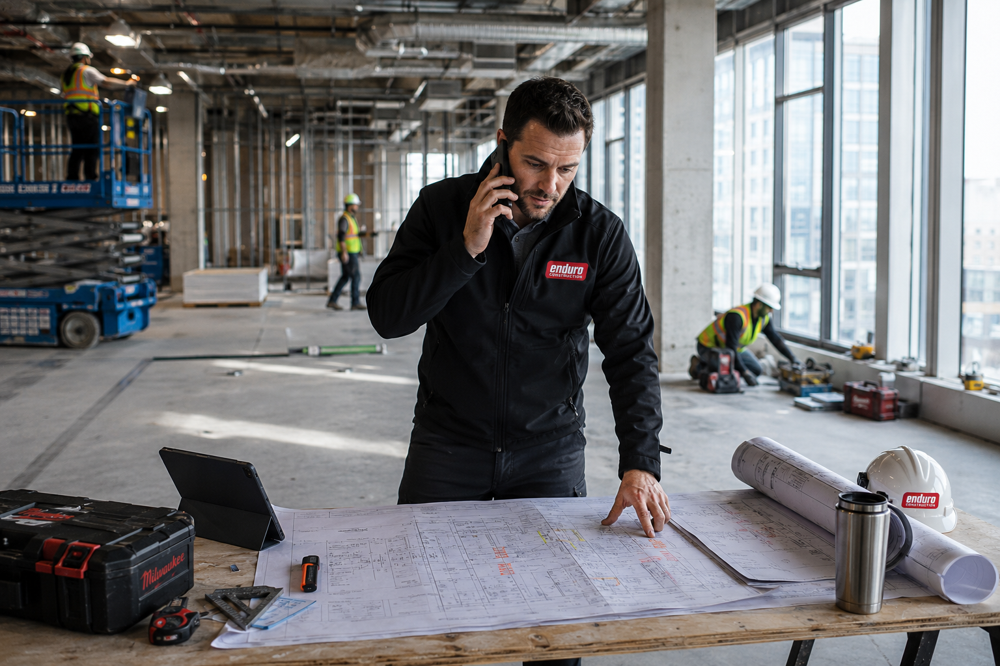
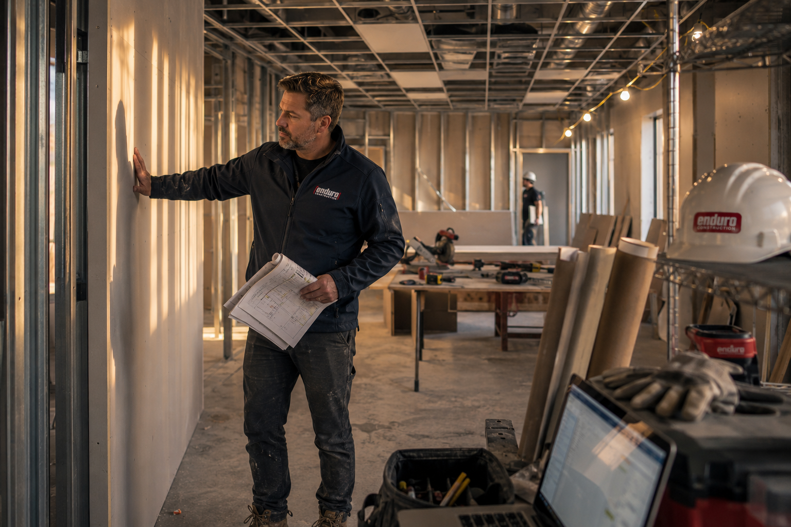
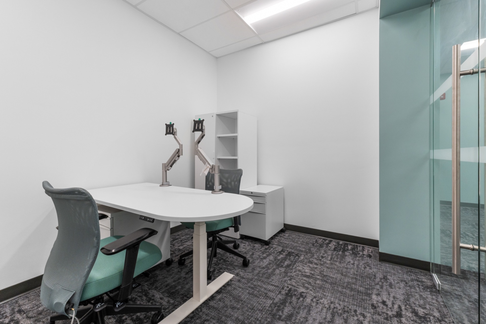
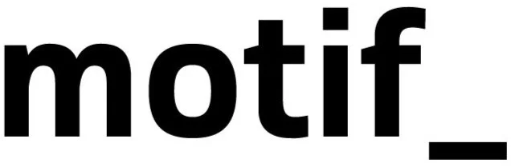
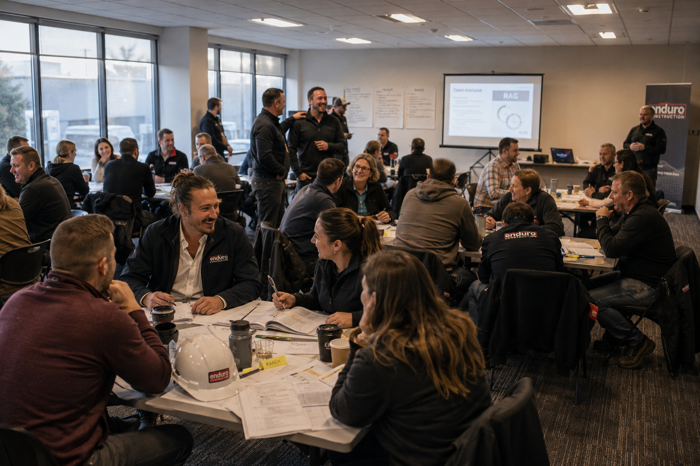

In Our
Element
Two core services, one standard — every project gets the same accountability, coordination, and craft.

General
Contracting
Self-performed commercial interiors and institutional builds — one accountable team.

Construction
Management
Design-through-handover oversight on schedule, budget, and trades — no surprises.
Let's
Talk.
Featured Projects

Dawson Lab
Lab & Research · UBC

Henry Angus
Education · UBC

SPPH Lab
Research · UBC

Ray Perrault
Civic & Recreation

Norgate
Retail · North Vancouver

Bonsor
Civic · Burnaby

CEME Office
Office · UBC

Maison Margiela
Retail · Oakridge Park

FSIAP Lab
Research · UBC

Seed & Stone
Retail · Pitt Meadows

CFIA
Federal Lab · Burnaby
Portfolio
What Customers
Have To Say.
"Tight permit windows, complex tenant requirements — Enduro handled it without slipping a beat. Communication throughout the build was first-class."
"Detail-oriented from kickoff to handover. Schedule and budget were exactly where they said they'd be. Highly recommended."
"Professional team, clean site, no surprises. The crew anticipated issues before they became problems."

The Crew
Behind Every Build.

In-house estimating, project management, site supervision, and finish trades. No rotating subs running your schedule — same crew, same standard, every build.
About Us